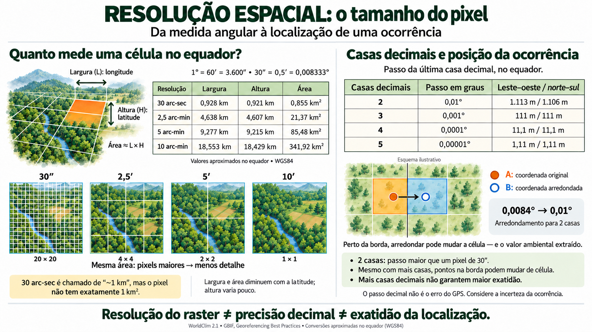

CAPÍTULO 07 · D · Data
O ambiente em camadas
Escolher preditores começa pela ecologia e continua pela geometria dos dados.
Base no curso: slides 205–246; 231–240.
No computador há temperatura, precipitação, altitude e solo. “Quanto mais camadas, melhor?” O grupo percebe que cada camada deve ter relação com a pergunta, escala adequada e documentação suficiente para ser usada também na projeção.
Raster, vetor e resolução
Um raster representa o espaço em células com valores. Um vetor representa pontos, linhas ou polígonos. Resolução, extensão, sistema de referência e alinhamento determinam como essas informações se combinam. Células menores não garantem melhor previsão se a precisão dos registros e o processo ecológico não sustentam esse detalhe.

Interpolar um raster para uma malha mais fina não cria observações novas. Métodos de reamostragem também têm consequências: vizinho mais próximo costuma preservar classes; métodos interpoladores combinam valores contínuos. Antes de empilhar camadas, confira unidades, valores ausentes, malha e período de referência.
Escolha ecológica e colinearidade
Variáveis diretas têm relação mais próxima com processos fisiológicos; variáveis indiretas podem resumir gradientes associados. Duas camadas fortemente correlacionadas podem carregar informação semelhante e dificultar interpretação ou transferência. Reduzir correlação não substitui escolher variáveis biologicamente relevantes.
## 1) Colinearidade
covdata <- rbind(presence.points.model, background.points.model)
pa <- covdata$pr_ab
covdata <- data.frame(covdata[, 5:ncol(covdata)])
set.seed(1968)
# Retira variáveis
# São removidas variáveis macroclimáticas amplas
# Austin (2007)
# predictors.to.remove <- c("Bio01", "Bio12")
# Remoção de variáveis com artefatos — controlado por remove.artifact.vars no script raíz
# Bio08, Bio09, Bio18, Bio19 apresentam problemas em regiões áridas (Booth 2022)
remove.artifact.vars <- FALSE
if (remove.artifact.vars) {
predictors.to.remove <- c("Bio08", "Bio09", "Bio18", "Bio19")
covdata <- covdata %>% dplyr::select(-dplyr::any_of(predictors.to.remove))
}
# Filtro de colinearidade
covdata.filter <- covsel::covsel.filteralgo(
covdata = covdata,
pa = pa,
# force = c("Bio05","Bio06","Bio09","Bio15"),
corcut = 0.8 # correlação aceita
)
predictors.final.keep <- sort(names(covdata.filter))
predictors.final.keepNo roteiro de Zaprionus, a seleção embutida vem em seguida, usando GLM, GAM e RF; predictors.final.keep recebe o conjunto selecionado. A PCA posterior ilustra o espaço ambiental e não substitui esses preditores no ajuste. No roteiro ESM há escolhas próprias: não copie automaticamente a configuração de uma espécie para a outra.
# Com os rasters já carregados:
names(predictors.model)
terra::res(predictors.model)
terra::crs(predictors.model)
terra::ext(predictors.model)
terra::nlyr(predictors.model)Ponto de retorno
Uma resposta ambiental improvável pode indicar unidade errada, escala inadequada, extrapolação ou associação enviesada. Antes de trocar o algoritmo, volte à documentação das camadas e à distribuição dos valores nas ocorrências.